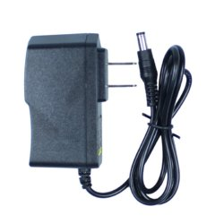
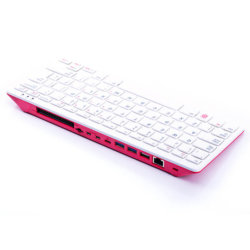
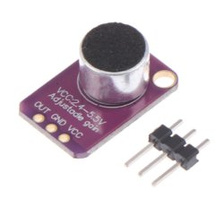

Adaptador 12V 1A
Este adaptador de voltaje cuenta con una entrada de voltaje de 100/240VAC y frecuencias de 50/60 Hz. Entrega una salida de 12VDC a 1A, cuenta con conector jack de salida estandar. - Conector DC3.5 - Protección Interna contra corto circuito,
Computador raspberry pi 400
Raspberry Pi 400 es una computadora personal completa basada en Raspberry Pi 4, integrada en un teclado. La Pi 4 es la primera computadora de la Fundación Pi que realmente siente la velocidad de una computadora de escritorio: ¡puede usarla como una computadora para todos los días a un excelente precio!
Módulo Micrófono Electrect Con Preamplificador MAX4466
Módulo que incorpora un micrófono de 20KHz amplificado por el MAX4466, un chip diseñado específicamente para la tarea de preamplificar micrófonos. Este op-amp tiene excelente rechazo de ruido por su fuente de poder. En la parte posterior cuenta con un pequeño reostato para ajustar la ganancia de 25x a 125x, la salida del op-amp es riel a riel, por lo que a máxima ganancia puede llegar a 5Vpp. Para su uso se recomienda usar la fuente más estable y filtrada (3.3V), la salida de audio saldrá por el pin OUT, que podrá ser leído con la entrada ADC del microcontrolador que se esté usando. La onda de salida tiene un offset de Vcc/2 y en un ambiente de silencio la salida será un voltaje estable de Vcc/2, es una salida con acoplamiento DC, si la entrada de audio requiere un acoplamiento AC puedes agregar un capacitor de 100uF en serie entre la salida OUT y la entrada del sistema (la salida no está amplificada para una potencia mayor que para los audífonos más pequeños, si necesitas conectarlo a parlantes necesitarás un amplificador).